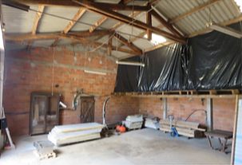
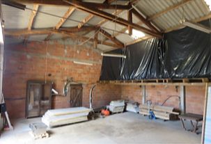

Au cœur de nos campagnes, un projet novateur prend racine. La ferme de La
Crouzié
incarne la fusion d'un lieu culturel, artisanal et social, porté par une communauté de personnes
motivées qui aspirent à créer
collectivement, à s'entraider, à partager et à insuffler une nouvelle vie à notre belle campagne.
Nous avons une vision claire : promouvoir la culture et l'art dans nos campagnes, tisser des liens
sociaux solides et présenter nos métiers artisanaux avec fierté.
La ferme de La Crouzié est un lieu pluriel, façonné par différentes entités collaboratives :
Les entreprises artisanales
Nous abritons diverses entreprises qui ont trouvé leur place au sein de notre écosystème, travaillant avec passion le bois, le métal, le cuir et bien d'autres matériaux. C'est un véritable vivier de créativité et de savoir-faire.
Debout Les Yeux
Avec son grand chapiteau, notre association socio-culturelle Debout Les Yeux, est le cœur battant de notre projet. Elle organise des événements culturels et sociaux qui rassemblent les habitants de nos campagnes, renforçant ainsi les liens qui nous unissent. Festivals, spectacles, concerts, ateliers créatifs, et bien plus encore, sont au rendez-vous pour enrichir nos vies et notre communauté. Le café associatif, un rendez-vous tous les vendredis, avec des thèmes différents mais aussi des cours hebdomadaires en partenariat avec des professionnels.
la Crouzié Des Métiers
Cette association est dédiée à la valorisation des métiers artisanaux. La Crouzié Des Métiers se positionne comme un véritable ambassadeur de nos traditions artisanales, proposant des ateliers que ce soit temporaire ou pour une reconversion professionnelle. Elle dispose aussi d'une possibilité de location à courte et longue durée pour des professionnel(le)s mais aussi la possibilité de devenir via la SPI EPILIBRE sous certaines conditions.
La ferme de La Crouzié est bien plus qu'un simple lieu. C'est un véritable épicentre d'expression culturelle, d'artisanat authentique et de solidarité communautaire. Nous sommes fiers de notre engagement envers nos campagnes et invitons chacun à rejoindre notre mouvement, à partager, à apprendre et à célébrer ensemble la richesse de notre patrimoine culturel et artisanal. Rejoignez-nous à La Crouzié et laissez-vous inspirer par notre passion pour la créativité, la culture et le partage.
La Crouzié porte ses valeurs sur le respect de l'environnement. C'est au quotidien qu'elle fonctionne de façon à réduire au maximum son impact sur la nature. Nous fonctionnons avec des éco-cup, ainsi que des couverts et assiettes réutilisables ou compostables. Des poubelles seront installées un peu partout sur le site, et les toilettes sont sèches.
à la une
À la recherche d'artisans pour la location d'un espace de travail partagé dans un hangar
 

À la Crouzié Des Métiers, nous avons
actuellement un nouvel espace de travail de 125m² disponible à la
location. Ses dimensions
sont de 10 mètres par 12,50 mètres, avec une hauteur sous plafond de 3 mètres sur un tiers de la
surface et 5 mètres sur le reste. Cet espace est équipé d'un branchement triphasé, d'une dalle en
béton au sol et d'un grand portail mesurant 5,50 mètres de large. Vous avez également la possibilité
de diviser cet espace pour accueillir plusieurs artisans.
Notre atelier fait partie d'un lieu de travail partagé où d'autres artisans professionnels
sont
installés. Notre projet collectif vise à mutualiser les espaces, le matériel et les compétences,
avec une forte orientation vers le respect de l'humain et de l'environnement.
De plus, sur ce site, vous trouverez également une association dédiée à la valorisation des
savoir-faire, la Crouzié des Métiers, qui gère les bureaux partagés et offre un espace pour
accueillir le public dans les ateliers. La Crouzié est à la fois un lieu de travail et un espace
culturel grâce à l'association Debout Les Yeux, qui organise
régulièrement des événements et propose
un café associatif.
Si vous souhaitez en savoir plus sur notre lieu, n'hésitez pas à nous contacter pour prendre rendez-vous.